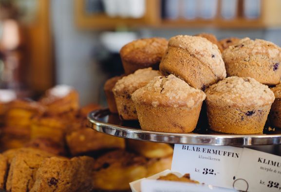
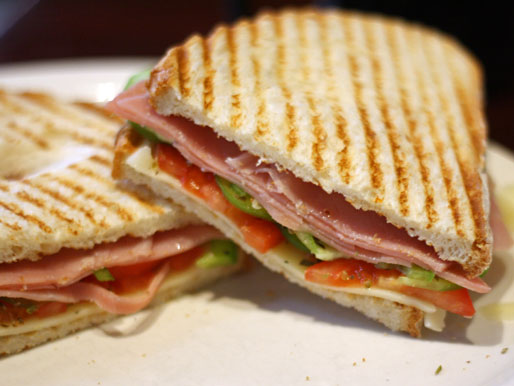
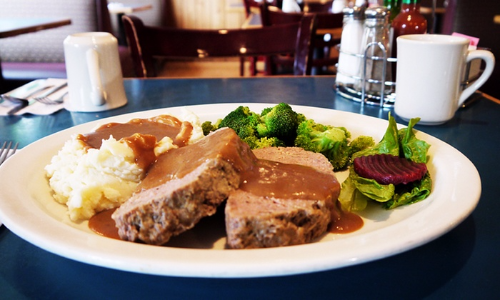

Craving waffles in the evening? We have you covered.
Our entire menu is available to you, from 7am - 8pm. All day is breakfast, lunch, and dinner at the Waffle House.

Breakfast
Breakfast is the most important meal of the day, which is why we serve only the best.
Wake up to one of our breakfast dishes, made fresh and hot:
Some of our most popular items include:
Waffle with peach, strawberry, or blueberry.
A waffle with bacon.
Or our house special, a waffle with two eggs, two pieces of bacon, hashbrowns, and butter.
Some of our most popular items include:
The Classic Pancake Breakfast: Three pancakes with creamy butter and syrup.
Pancake Special: Two pancakes, two scrambled eggs, two sausages, and your choice of either two pieces of bacon, hashbrowns, or panfries.
Some of our most popular items include:
Veggie Omlette: Made with three eggs filled with red and green peppers, mushrooms, tomatoes, and chedder cheese.
Chili Omlette: Our homemade chili is combined with three eggs, topped off with cheese.
Denver Omlette: Three eggs filled with dices of ham, tomatoes, and green onions.
All omlettes have the choice of hashbrowns, pan fries, or grilled tomatoes.
*Menu is subject to change.
Lunch
At lunch we serve hearty meals at a brisk pace.
Our menu opens up to many types of food, all of which we're sure you'll enjoy.
Our lunch offerings include:
Some of our most popular items include:
Fish & Chips: Lightly battered cod served with coleslaw and tartar sauce. With your choice of French Fries or pan fries.
Wild Alaskan Salmon*: Boneless salmon pan seared and brushed with basil butter.
Filet of Sole*: Lightly breaded, grilled and served with tartar sauce mixed with vegetables.
Cod Neapolitan*: Wild Pacific ling cod topped with italian tomato sauce.
*Come with your choice of mashed potatos, baked potatos, or rice.
Some of our most popular items include:
New York Steak: Fire grilled 6oz Alberta steak topped with sauteed mushrooms served with vegetables.
Roast Pork: Slow roasted pork come with vegetables and served with apple sauce and gravy.
Senior Sailsbury Steak: Grilled lean beef patty topped with sauteed onions and homemade gravy.
Come with your choice of mashed potatos, baked potatos, or rice.
Some of our most popular items include:
Butter Chicken: Boneless pieces of BC chicken, simmered in mild butter sauce and served with rice and vegetables.
Chicken Pot Pie: Served in a saucepan, chicken is combined with carrots, peas, onions, and celery with a seasoning of salt and pepper.
Lemon Chicken: Tender chicken pieces, mixed with noodles cooked in soy sauce. Topped with boiled bean sprouts and served with lemon sauce.
*Menu is subject to change.


Dinner
End off your day with a warm meal amongst good company. From sandwichs, to soups, and everything in betweeen.
Some of our most popular dinner offerings:
Hot Turkey Sandwich: Fresh oven roasted BC turkey served open faced with layers of gravy and cranberry sauce, all served with mixed vegetables.
Shepherd's Pie: Cooked ground beef with chopped onion, topped with mashed potatos. Oven baked until brown and served mixed vegetables on the side.
Chicken Teriyaki: Flame broiled chicken breast with teriyaki sauce and topped with a grilled pinapple.
*Menu is subject to change.
*Items are subject to change. Item description and choices may differ.